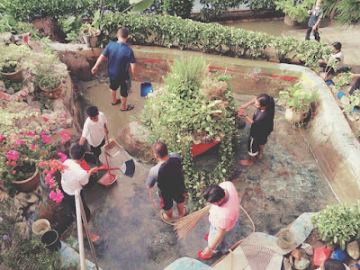
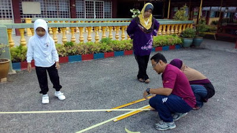
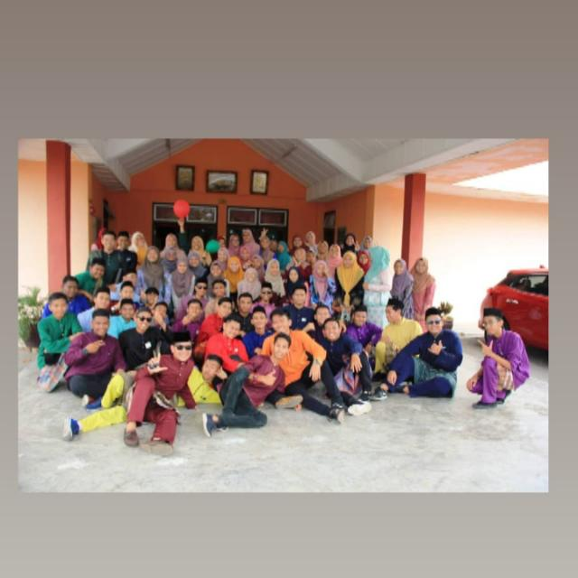
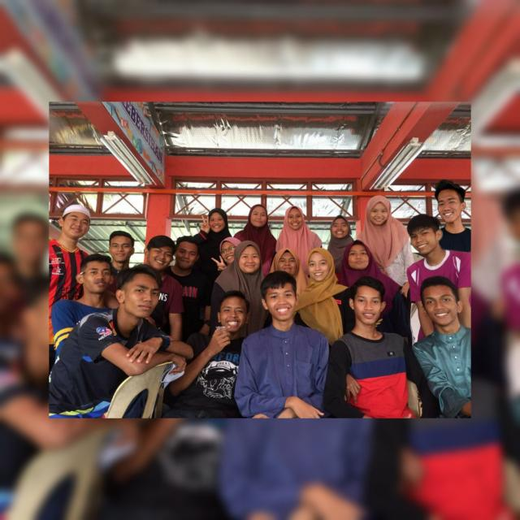
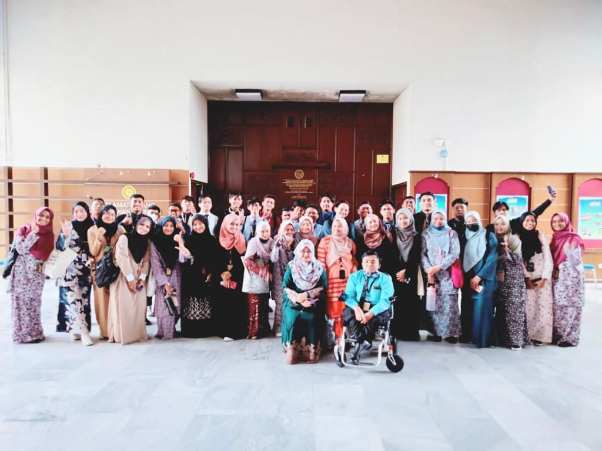
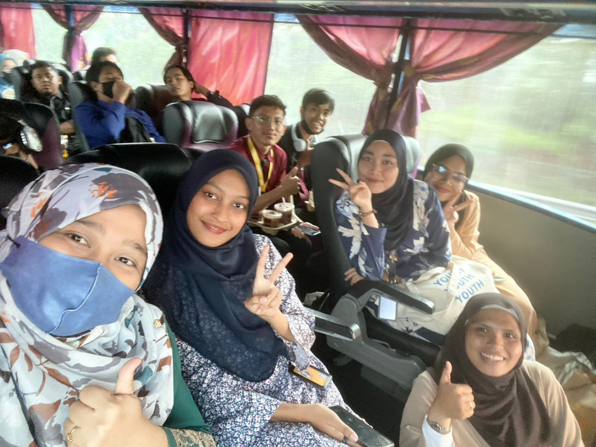

THE DAY BEGIN
 PRIMARY SCHOOL 2009----2004
- 2009--2014: Born in the Negeri Sembilan i started my preschool and my primary school in Sekolah Kebangsaan Serting Felda. Through this time i make a lot of friend eventhough i am someone who is not talkative, many fun thing did happened in this time. Despite that, i still unable to contact them through any kind method. Given the example like from using the social media that we know this day given the examples facebook, instagram and even tiktok. Well i still hoping all of them still safe and sound also in the great health as well.
- Well there nothing that much happening in this moment considering im not really into sport or any outside activies that happening in school.Neither im the one that love to take any memorable picture with my friend.
THE PATH CONTINUES
 SECONDARY SCHOOL 2015----2020
- 2015--2020: Smk Bandar Baru Serting was a school that i took for my secondary school. The pictures below is during my times in form 5. For your information a lot of thing happened during this time. Starting with me finishing my PT3 with 5A and 3B. With this kind of achievement I am able to enter the class that i want. For the classes i end up with the agriculture and business class during my time in form 5. Since i had joined this class we have done many fun activies and stuff. One of the best thing that i can remember during this time is that our class manage to experience growing and feeding a chicken
- Many wonderful has happened in my time during the secondary school. The picture here cannot really describe anything that happened during that time
A FEW STEP TOWARD THE FUTURE
 COLLAGE LIFE 2021----UNTIL NOW
- 2021----NOW: The picture above as you can see above is during the visit of the memorial of Tunku Abdul Rahman. In total there a two bus that going to this trip. For your information we also had the oppurtunity to visit The National Archive of Malaysia. We learned a lot of thing about nam clearly this already show us enough all the information that can be useful once we reach a certain age.
-
FACT ABOUT NAM:The National Archives of Malaysia (ANM), created in 1957 as a repository of data, information, and government documents, is responsible for the collecting, preservation, and production of public records in various sorts and formats as references for researchers and the general public. In accordance with the development and surroundings of current technological advancements, as well as the Government Transformation Policy, ANM is hereby determined to foster widespread awareness among the people in all aspects, thereby generating the formation of excellent human capital through the dissemination of information regardless of time and place boundaries.